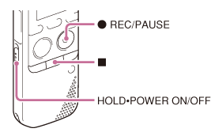
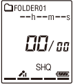
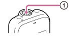
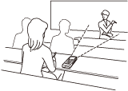
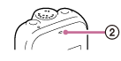
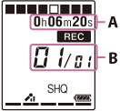
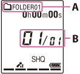

IC RecorderICD-PX333/PX333F
Recording sound from the built-in microphones
The following steps are the basic recording procedures using the specified microphone sensitivity and recording mode.

Note
- Before making a recording, be sure to check the battery indicator.
- Noise may be recorded if an object, such as your finger, etc., accidentally rubs or scratches the IC recorder during recording.
Hint
- Before you start recording, we recommend you make a trial recording first, or monitor the recording.
- Slide the HOLD・POWER ON/OFF switch in the direction of “POWER ON/OFF” to turn on the IC recorder, or towards the center to release the IC recorder from the HOLD status.
The stop mode window appears.

- Select the desired folder.
- Place the IC recorder so that the built-in microphone (
 ) face the direction of the source to be recorded.
) face the direction of the source to be recorded.


- Press
 REC/PAUSE in the stop mode.
REC/PAUSE in the stop mode.
The operation indicator () flashes in orange, and then lights in red.

You do not need to press and hold
REC/PAUSE while recording. The new file will be automatically recorded as the last file in the current folder.

A. Elapsed time of the current recording (*)
B. File number of the file being recorded/the total number of recorded files in the folder
* You can switch the elapsed time display to remaining time, or another display by pressing DISP/MENU.
- Press
 (stop) to stop recording.
(stop) to stop recording.
The “Accessing...” animation appears and the IC recorder stops at the beginning of the current recording file.
You can locate the recorded file using its folder name and file number for playback later.

A. The folder containing the recorded file
B. The number of the recorded file representing how early the file was recorded in a folder
Note
- The IC recorder is recording data and storing it on the memory media when the “Accessing...” animation appears in the display window or the operation indicator flashes in orange. While the IC recorder is accessing data, do not remove the batteries or connect or disconnect the USB AC adaptor (not supplied). Doing so may damage the data.
Hint
- Files recorded using this IC recorder will be recorded as MP3 files.
- You can record up to 199 files in each folder.
- You can make new folders or erase unwanted folders using the Sound Organizer software.